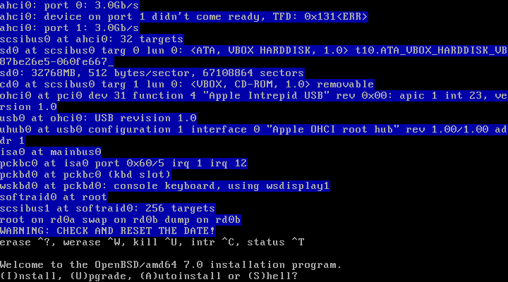
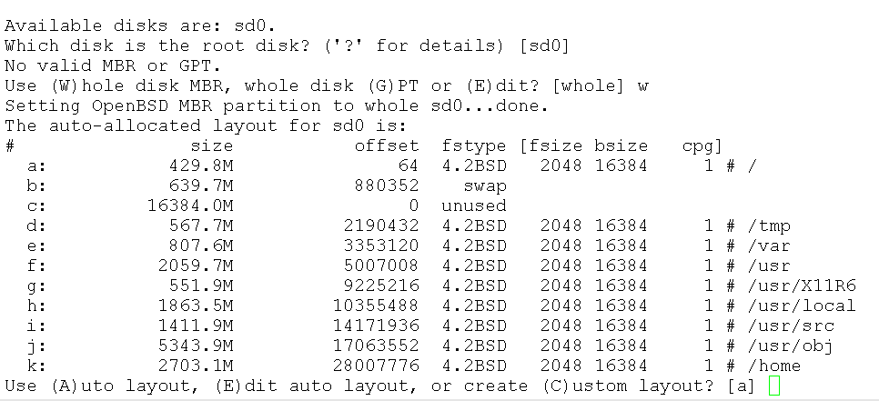
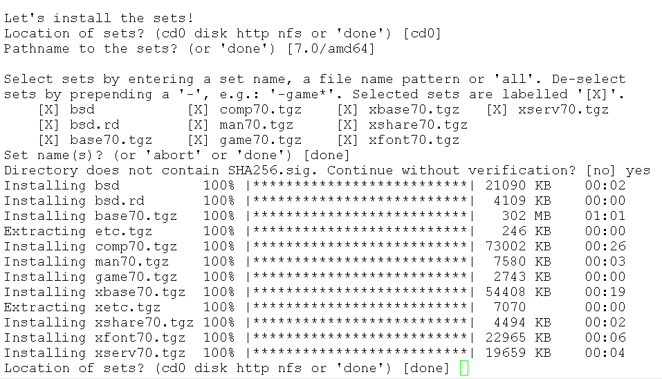
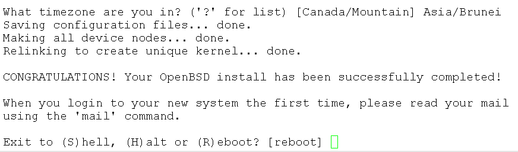
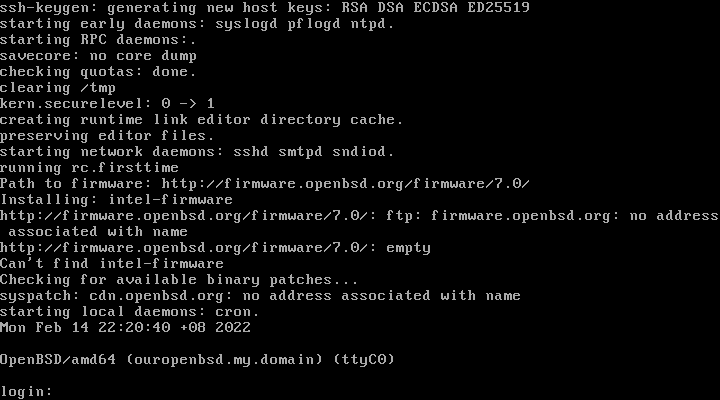

Permulaan
Saya bukannya pakar pengguna OpenBSD atau "unix guru". Saya pengguna biasa sahaja.
 Watak OpenBSD, MangaRamblo
Watak OpenBSD, MangaRamblo
Saya mulanya tertarik kepada watak diatas "MangaRamblo" ia berbeza dengan watak BSD Daemon. Ia Seolah olah dilukis oleh pelukis X-Men sembilan puluhan, Joe Madureira. Lukisan beliau
ada pengaruh pelukis Manga Jepun yang membuatnya unik. Watak tersebut juga digunakan oleh halaman OpenBSD Journal.
Perisai percuma OpenBSD yang diusahakan secara terbuka oleh sukarelawan dari seluruh dunia. Ia berasal dari negara Kanada 🇨 🇦 .
Bermula pada tahun 1996 oleh pengasasnya, Theo De Raadt. Pada masa itu dia telah disingkirkan oleh kumpulan NetBSD yang mengusahakan perisai terbuka NetBSD.
* **. Walaupun begitu, kedua dua kumpulan ini masih berkolobirasi sama.
Populariti OpenBSD tidaklah banyak berbanding perisai lain seperti FreeBSD, Apple macOS dan jugaMicrosoft Windows.
Namun tetapi kebanyakan perisai Unix atau semacam Unix menggunakan aplikasi popular mereka OpenSSH.
Yayasan OpenBSD telah ditubuhkan untuk megurus, merancang dan mengembangkan OpenBSD dan juga termasuk aplikasi aplikasi mereka yang lain
seperti OpenSSH,OpenBGPD,OpenNTPD,
OpenSMTPD,LibreSSL,mandoc dan rpki-client,
 Poster StarryPointers ini semacam lukisan Vincent Van Goh
Poster StarryPointers ini semacam lukisan Vincent Van Goh
Semasa saya menulis dokumen ini, OpenBSD di tahap versi 7.0
Perbezaan di antara OpenBSD Dan Debian
Kebanyakan pengguna OpenBSD berasal dari perisai yang lain. Saya dulu mengguna Microsoft Windows dan GNU/Linux.
| Deskripsi |
OpenBSD |
Debian |
| Keluarga Unix |
*BSD |
**GNU/Linux |
| Lessen |
BSD |
GPL |
| Perkembangan dan Penyelidikan |
Satu Kumpulan |
***Integrasi |
| Lokasi Kernel |
/ |
/boot |
| Swap partition |
Not dedicated partion |
Ya |
| Default Shell |
ksh |
bash |
| Mengurus Applikasi |
pkg_add |
apt |
*OpenBSD tergolong dari keluarga BSD Unix, Sumber kod bercabang dari NetBSD, Kod NetBSD bercabang dari 386BSD. Dan 386BSD
bercabang dari kod 4.3 BSD Net/2 iaitu BSD (Berkley Software Distribution).
**GNU/Linux tergolong dari keluarga semacam Unix.GNU atau "GNU Not Unix" dan Kernel Linux.
*** Pengurusan Userland tools dibuat oleh sukarelawan GNU dan Linux Kernel di uruskan oleh sukarelawan Linux.
Sukarelawan Debian akan menguruskan integrasi aplikasi dan menyumbang kepada pembaik pulih aplikasi kepada pengurusnya yang asal.
Permasangan Perisai OpenBSD
Sebelum anda memasang OpenBSD ke dalam Laptop, Desktop atau Server anda. Sebaiknya kita selidiki jikalau perkakas anda serasi.
Maksud perkasas di sini seperti Storage controller, Network Adapter, Wireless Adapter, Graphics Card dan Audio Card.
Berbanding dengan perkembangan Linux, perkembangan drivers OpenBSD akan setapak di belakang.
Sekiranya anda belum selesa dengan pemasang perisai tersebut ke dalam Laptop, Desktop dan Server
anda boleh memasang perisai tersebut secara virtual seperti Microsoft Hyper-V, VMWare, Oracle VirtualBox dan lain lain.
Sebelum memulakan installation ada beberapa maklumat anda perlu tahu terlebih dahulu
hostname ia itu nama komputer anda
IP address
IP address DNS

Pemasangan 01 - Install
 Pemasangan 02 - SSHD dan root
Pemasangan 02 - SSHD dan root
Jika awda tidak mahu enable remote access ke computer anda kita boleh memberi jawapan tidak disini
Sebagai langkah keselamatan akses root melaluie remote login adalah di disable

Pemasangan 03 - harddrive layout
Layout yang saya pilih adalah yang disediakan oleh installer. Anda boleh mengubah layout mengikut ke hendak anda
atau megubahnya selepas selesai. Di sini Size harddrive saya adalah berjumlah 32GB
Dulu semasa saya belajar mengenaie Debian ada orang menyebut tentang /exports, saya bengang apa maksud folder exports ?
Saya mendapat tahu, dia mengunakan untuk mount point NFS server mereka.

Pemasangan 04 - Fileset
Semasa process ini, ia akan mengambil masa jikalau anda menggunakan internet installation kerana ia tertakluk kepada
kecepatan internet anda.

Pemasangan 05 - Reboot
Setelah selesai, anda perlu reboot system anda.

Pemasangan 06 - Tamat
Jikalau system anda sudah bereboot dan anda terlihat url http://firmware.openbsd.org, kemungkinan
sistem anda menghendaki drivers proprietary, di gamabar tersebut ia dari Intel. Kalau tidak ada access internet
awda boleh menggunakan fw_update untuk memasang driver tersebut apabila mendapat access internet.
{kind=link}